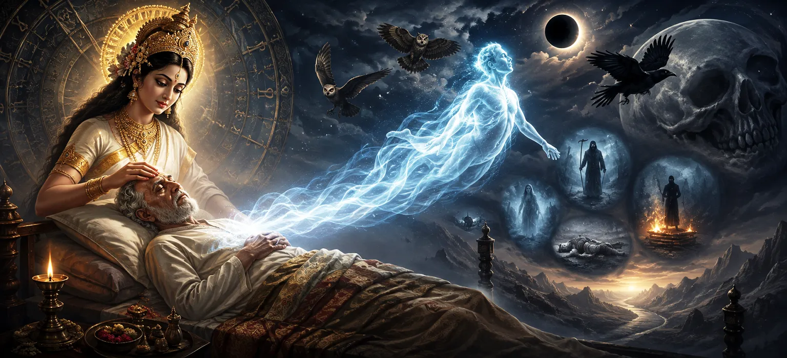

The Signs and Time of Death
Transitioning from the social duties and feminine conduct examined in Chapter 24, Chapter 25 of Uma Samhita turns its profound gaze toward the ultimate existential reality in The Signs and Time of Death. Having explored how mortal life is nurtured, structured, and lived, the scripture now investigates the unavoidable horizon of physical transience—detailing through an exhaustive elevenfold framework the subtle omens, physiological shifts, and temporal markers that portend the withdrawal of the life force under the cosmic laws of Lord Shiva.
This chapter details premonitory bodily indicators, sensory alterations, dream visions, and the philosophical wisdom of accepting mortality as a gateway to eternal spiritual liberation.
Core Topics in This Text (11 Pillars)
- 01 The Inevitability of Physical Death and Transience →
- 02 Subtle Physiological Premonitions and Body Shifts →
- 03 Sensory Distortions and Altered Perception of Elements →
- 04 Visionary Dreams and Ominous Nocturnal Omens →
- 05 The Gradual Withdrawal of Prana and Life Breath →
- 06 The Immovable Governance of Kala (Time) →
- 07 Sudden Mental Detachment and Unusual Clarity →
- 08 The Supreme Importance of Remembering Lord Shiva at the End →
- 09 Righteous Conduct and Family Support in Final Hours →
- 10 Philosophical Acceptance of Mortality as Liberation →
- 11 Transitioning from the Signs of Death to Overcoming Kala →
1. The Inevitability of Physical Death and Transience
This opening section establishes that whatever takes birth in the physical realm must inevitably experience dissolution. Uma Samhita reminds the seeker that the body is temporary, while the indwelling soul is eternal.
Understanding this foundational truth is the first step toward overcoming existential fear and cultivating true spiritual wisdom.
2. Subtle Physiological Premonitions and Body Shifts
The text details specific bodily premonitions that manifest when a person's allotted time nears its end, such as uncharacteristic changes in body temperature, pulse irregularities, and involuntary tremors.
These physical shifts signal the quiet unravelling of the material frame's vital coherence.
3. Sensory Distortions and Altered Perception of Elements
Uma Samhita explains how a dying individual's sensory perception undergoes profound alteration—failing to see familiar lights, misinterpreting sounds, or losing the ability to detect distinct tastes and smells.
This occurs as the elemental forces composing the body begin to withdraw into their cosmic origins.
4. Visionary Dreams and Ominous Nocturnal Omens
The scripture describes specific dream states and nocturnal omens experienced by those whose time is near, such as visions of departed ancestors, descending into dark regions, or seeing unusual celestial phenomena.
These signs serve as internal psychological and spiritual markers of the impending transition.
5. The Gradual Withdrawal of Prana and Life Breath
Uma Samhita outlines the mechanics of death as the progressive retreat of prana (life breath) from the extremities toward the core energy centers of the body under the governance of divine cosmic laws.
This gradual process underscores the delicate nature of the human vessel.
6. The Immovable Governance of Kala (Time)
The text emphasizes that Kala (Time) is an unstoppable force ordained by Lord Shiva, operating impartially across all living beings without exception.
Recognizing the absolute authority of Kala inspires individuals to lead righteous lives and let go of trivial attachments.
7. Sudden Mental Detachment and Unusual Clarity
Uma Samhita notes that in the final phases, a person often experiences sudden, profound mental detachment from worldly possessions, family disputes, and material ambitions.
This clarity allows the mind to turn inward toward higher spiritual truths.
8. The Supreme Importance of Remembering Lord Shiva at the End
The scripture declares that chanting the holy names of Lord Shiva or keeping His sacred form anchored in the mind during the final moments ensures supreme peace and liberation from future rebirths.
This final remembrance is portrayed as the ultimate culmination of all spiritual practices.
9. Righteous Conduct and Family Support in Final Hours
Uma Samhita prescribes how family members and caregivers should behave during a person's final hours—maintaining a calm, peaceful atmosphere, reciting sacred verses, and avoiding disruptive grief.
This supportive environment aids the departing soul in making a serene transition.
10. Philosophical Acceptance of Mortality as Liberation
The text encourages spiritual seekers to view death not with terror, but with philosophical equanimity as a necessary shedding of worn-out garments by the immortal soul.
True wisdom lies in understanding that death is merely a doorway to higher realms of divine existence.
11. Transitioning from the Signs of Death to Overcoming Kala
Having detailed the elevenfold signs, temporal markers, and philosophical realities of death, Uma Samhita prepares to explore the profound spiritual disciplines and devotion that can conquer the grip of Kala in the next chapter.
This transition moves from recognizing inevitable mortality to discovering the transcendent grace of Lord Shiva that transcends time itself.
Spiritual Insight
Chapter 25 teaches us through eleven foundational pillars that physical death is an inescapable reality governed by Kala and Lord Shiva. By accepting mortality with equanimity and keeping the mind anchored in divine remembrance, we transcend fear and attain ultimate liberation.
Frequently Asked Questions
① How does Uma Samhita approach the phenomenon of death?
The text views death not as a tragic end, but as a natural transition governed by the cosmic order of Lord Shiva, marking the completion of a mortal lease.
② What kinds of premonitory signs are discussed in this chapter?
The scripture details subtle physiological shifts, sensory alterations, and dream omens that manifest as a person's life force begins to withdraw.
③ How does this chapter transition to the next discussion?
After establishing the inevitability of physical death and its signs, it prepares the reader to explore spiritual methods for overcoming the clutches of Kala in the subsequent chapter.